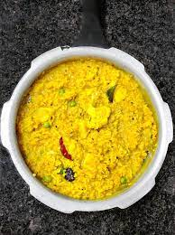

Shona moong erKhichudi

Ingredients
- moong dal
- rice
- potatoes
- Red Chillies
- Mustard oil
- Turmeric powder
- Salt
- 5 phoron
Recepie
- peel and wash the potatoes. Boil them in water until they are soft. You can poke the potatoes and check the hardness during boiling.
-
Chop the onions finely into crescent shapes. Chop the green chillies in to circular rings.
-
Smash the potatoes into soft dough.
-
Spread 3 tsb mustard oil on a saute pan and wait till its warm.
- Then put two rechillies by breaking them in between so that they dont burst at you.
- Once the red chillies are crunchy and brown put the finely chopped onions and green chilliesand fry them until the onions turn golden.
-
Then put 1/2 tsb of salt and saute them well.
- Then put 2/3 tsb turmeric powder and mix them well.
- Finally, add the smashed potatoes, mixall of the ingredients very well and then saute them for some time
- Serve Alu Sheddho with steamed rice and dal.